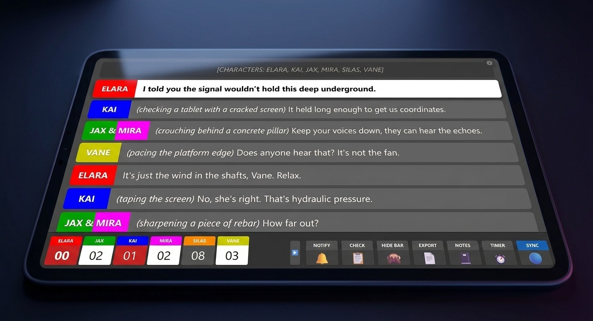
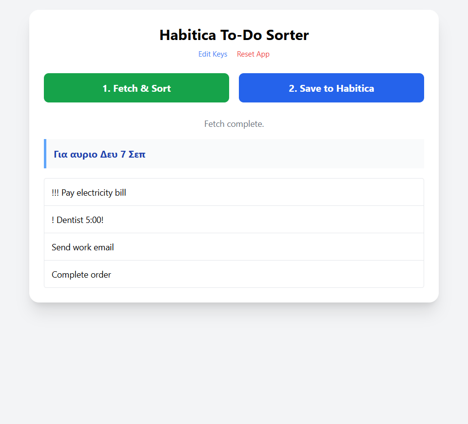
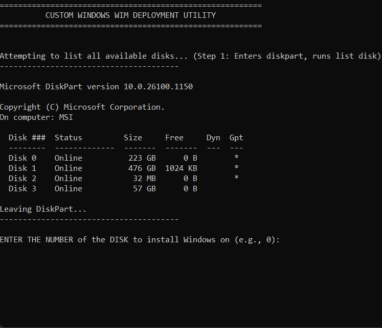

LiveRundown
An open-source, real-time cue-tracking engine that replaced paper scripts for backstage theater crews, cutting scene-transition sync time from minutes to seconds.
View on GitHub →
Hi, I’m
Curious, hands-on, and self-taught by nature — drawn to understanding systems from the inside out, whether that’s a piece of software, a network, or a stage production, and building whatever tool the problem calls for.
An open-source, real-time cue-tracking engine that replaced paper scripts for backstage theater crews, cutting scene-transition sync time from minutes to seconds.
View on GitHub →

A privacy-first, client-side tool that fetches, prioritizes, and summarizes Habitica to-dos locally, with no backend and no external data transmission.
View on GitHub →A deployment script that semi-automates Windows imaging and provisioning across multiple PCs, cutting most manual per-unit setup, paired with a hot-swap system of ready-to-deploy spare units for fast, low-effort future replacements.
View on GitHub →